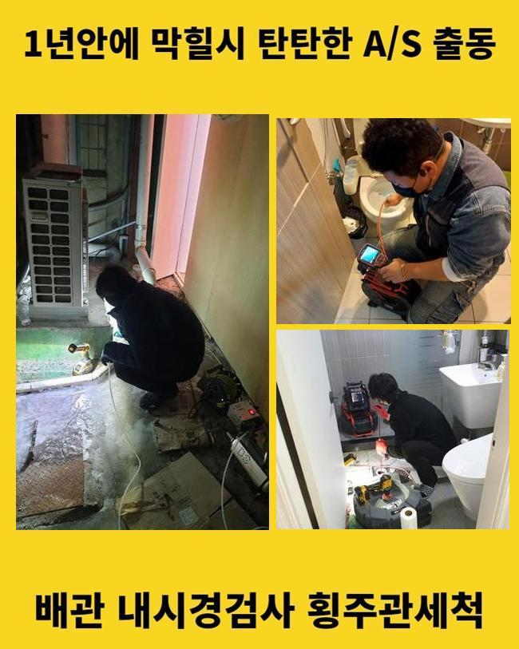
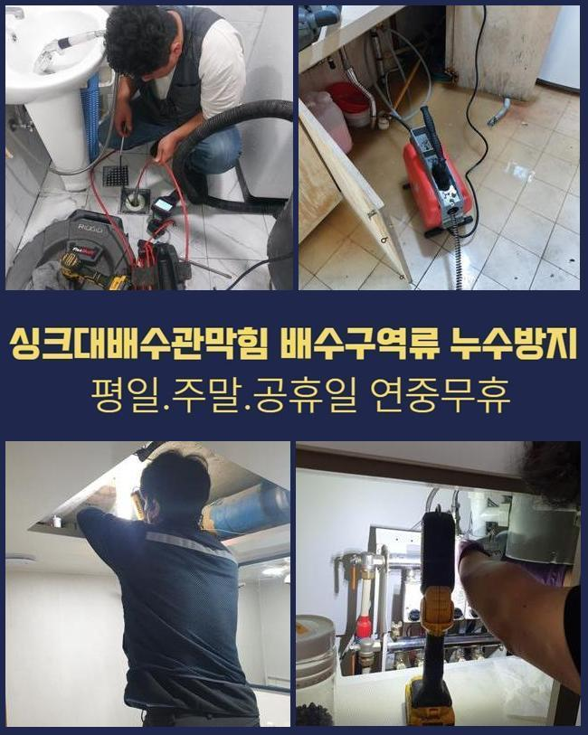
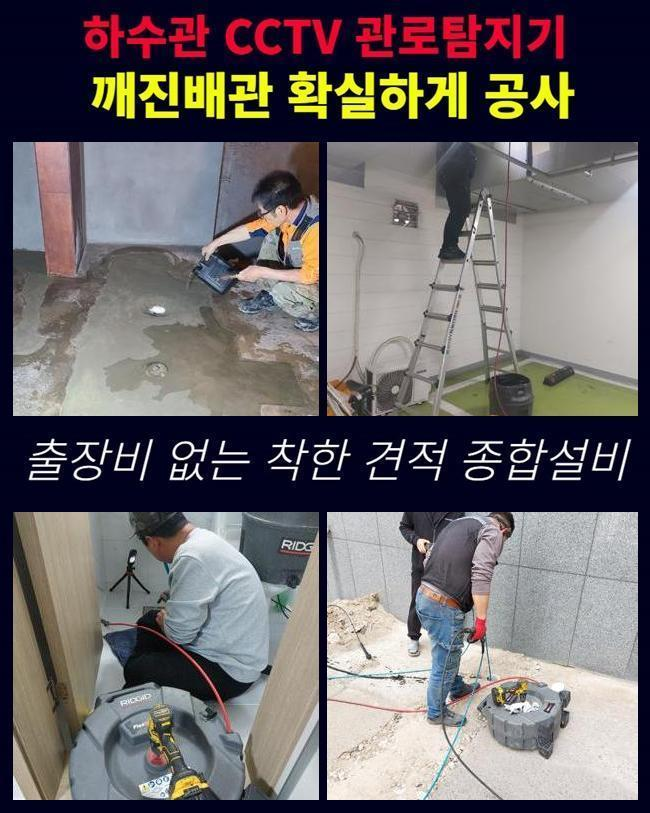
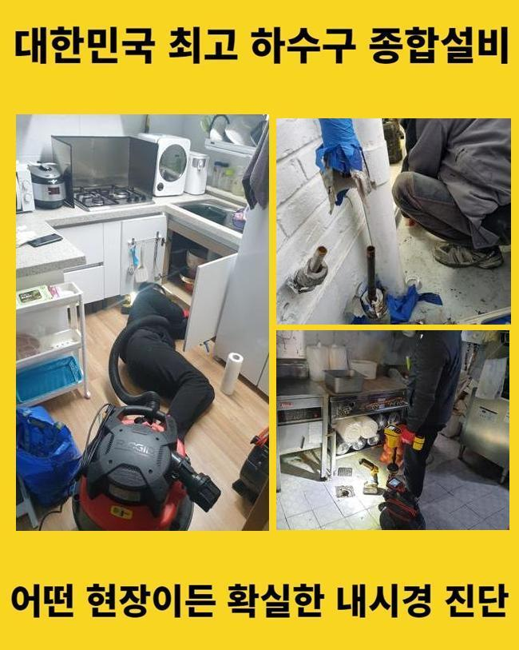
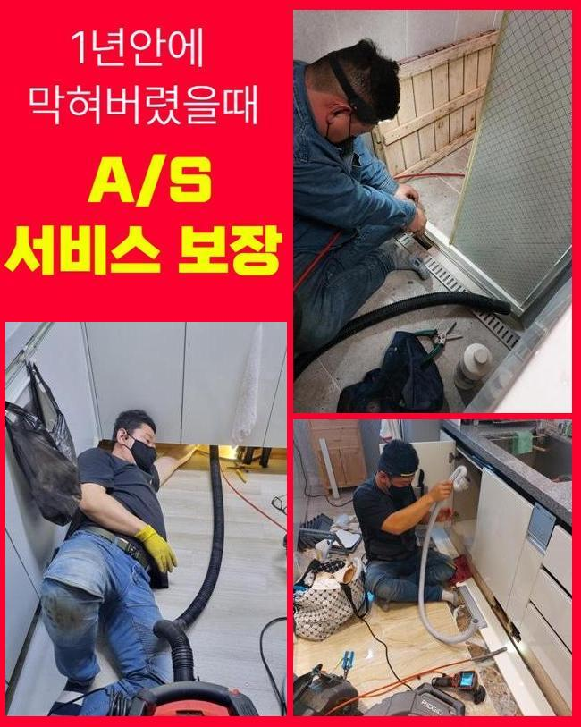
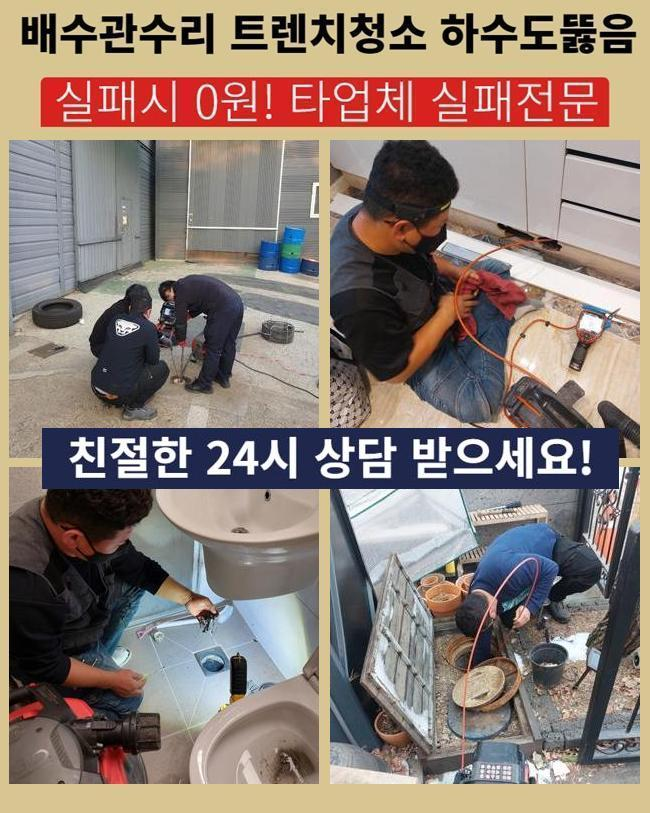
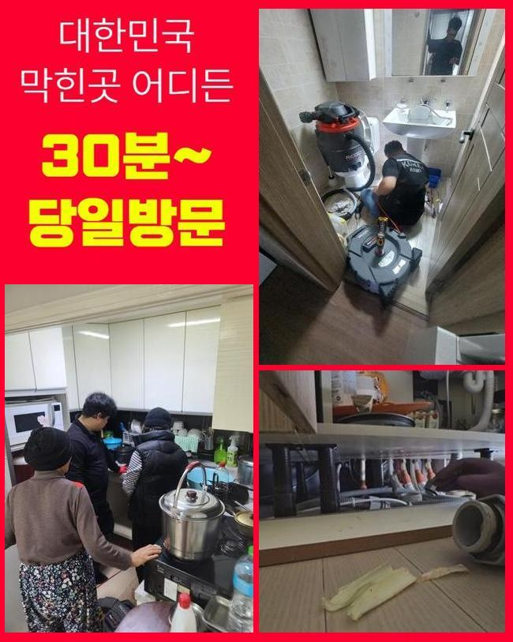

🏠 세마동싱크대막힘 가수동 배관내시경카메라 설비출장
용인 세마동 싱크대막힘 전문 시공 후기

📋 작업 개요
- 위치: 용인 세마동, 세마동, 용인
- 서비스 유형: 싱크대막힘, 하수구막힘, 배관막힘, 배관청소, 고압세척
- 작업 일시: 2025. 1. 28. 10:21
- 업체명: 하수구수사대 (010-5615-2118)
🔍 문제 상황
세마동싱크대막힘 가수동 배관내시경카메라 설비출장
저희측은 배수시스템과 연계된 여러종류의 작업을 처리하는 회사입니다
배관전문가가 상시적으로 업무대기하고 있고 의뢰자께서 겪고계신 문제들에 신속하게 조치해드립니다
금번엔 주방시설의 배수구막힘 처리 케이스를 말씀드리도록 할게요
전주에 연락을 주신 지점은 일반상가입니다
한 음식점의 배수문이 막혀버리게 되었으며 거기에 더해 화장실배수까지 안되는 형국이었습니다
마침 근방에 대기중인 작업자가 바로 이동하였으며 적합한 조처를 시행하기로 합니다
주방막힘과 화장실쪽의 관로정체가 생긴곳은 닭백숙 식당이었는데요
싱크대에선 다양한 음식재료들을 다루기에 관막힘이 자주 발생해요
이래서 식당주인분들을 그에 대한 여러 방법들을 모색하시곤 하는데요
평상시에 청결하게 사용하였더라도 갑작스럽게 단단한 물체가 유입된다면 물막힘이 쉽게 발발하므로 관리가 수월하지 않아요
금번 내방한 곳은 어떠한 이유로 정체가 발현된건지 세밀하게 확인하도록 하겠습니다
우선적으로 주방의 배관시설부터 점검하기로 했죠
한식집의 경우 일반적인 주거지의 주방과 다르게 배수 트렌치의 스케일또한 상당하죠

🔎 원인 분석
💡 전문가 진단: 정밀 진단 장비를 사용하여 슬러지의 고착 여부를 판명하고 타격/세척 작업을 실시했습니다.
그렇기에 처리가능한 수도량도 증가하게 되죠
그러므로 보통의 가정집의 유동성테스트를 기준점으로 정하고 수선여부를 결단하여선 곤란하며 그것에 적합한 물의양을 넣어서 배수가 제대로 되는지 파악해보아야 하겠습니다
해당 과정을 신밀히 실행하지 않는경우엔 몇달후에 사태가 또다시 일어날수가 있어요
검사를 해보았더니 원활하게 배수처리가 이어지지 않는단 정황을 간파할수가 있었어요
천천히 소멸되기는 하였으나 식당운영을 재개하기엔 역부족이었답니다
그후에 관로안으로 배관내시경을 넣어서 분명하게 정황을 조사해보기로 하였습니다
기름성분들과 석회찌꺼기들이 하수관속을 채우고 있었답니다
파이프속에 흘러가면 안 되는 성분들이 쌓여서 문제가 생긴거예요
이런 부분들에 관하여 하수관에 투입돼면 문제가 될것들에 대하여 알려드리겠습니다
설명하는 것들을 메모해두셨다가 평상시에 이를 적용해볼것을 추천합니다
기름기는 배수과정에서 단단하게 뭉치고 그것으로 인하여 배수관에 붙어버릴 가망성이 높답니다
그러하기에 반드시 종이류로 처리하고 세척하는게 중요하죠
부가적으로 기름분리수거 역시 습관적으로 활용하는게 좋겠죠
매장에서 손님들에게 제공되는 원두커피에서 발생되는 가루들도 하수도막힘을 야기할수 있죠
커피가루는 기름과 결합하는 성향이 강하여 배관속에서 뒤엉키기 쉽답니다

🔧 작업 과정
그러하기에 일반쓰레기로 분류하여 버리시는게 좋습니다
설거지 과정에서 그릇에 잔류하는 음식물을 싱크대에 투입하면 배수관 측면에 눌어붙을 확률이 있답니다
고춧가루 등은 과립이 잘기에 거름망을 지나쳐 관로로 유입될수 있어 개별적으로 버리는것이 바람직해요
조리도중에 생성된 옥수수가루같은 것들도 개수대에 바로 버리시면 떡처럼 변하여 관의 정체를 일으킬수 있죠
그렇기에 이러한 것들은 필수로 분리수거해서 배수시설을 안정적으로 관리하는게 좋겠습니다
배관카메라로 심층까지 진단해보았는데 공용파이프에도 트러블이 일어났을거라 추정하였고 별개로 진단하기로 결정합니다
우선 의뢰인의 주방시설의 하수도 정비를 시행해야 하겠습니다
닭백숙요리 전문식당이라 타업장과 비교하여 기름성분이 많았으며 그밖의 침전물들과 혼합되어 복잡한 상황이었습니다
그것들이 오랫동안 잔류하면서 배수관면에 고착화된 형국이었답니다
샤프트기기를 가동시켜 본 지점의 초기 세척작업을 시행하였습니다
노즐부위는 현장상황에 따라 교체하여 시공할때도 있는데 보통 쇠사슬의 모양을 가진 관통체인을 씁니다
나일론으로 피복된 금속케이블 끝단에 해당 부속품이 결속되어서 배관안에 넣고 돌리면 고속으로 회전하면서 누증된 이물질들을 가루처럼 부서뜨리는 결과를 만들어줍니다
보통은 샤프트를 이용하면 이물제거는 큰 문제없이 진행됩니다
그러나 앞에서 설명드린대로 이지점은 공용관로까지 찌꺼기가 전파되었다는걸 알아낸바가 있죠
그렇다면 개별배수관 처리만으로 근원적인 트러블이 소멸될리 만무합니다
세정된걸로 오인이 일어나기도 하지만 메인 관로가 막혔다면 몇주정도가 흐른다음에 다시금 하수관이 막히게 된답니다
개별배관 청소를 끝낸후에 지하기계실에 있는 공동관을 진단하기로 합니다
배관카메라를 넣어보니 두텁게 누증된 검정색의 잔재들이 가득하였답니다
장기간에 걸쳐 쌓인걸로 보였으며 크기도 크다보니 더욱더 수량이 방대해진거죠
이부분을 고압물청소를 통하여 해결하기로 하였으며 2시간이 넘게 소제를 시행했죠
메인관까지 분쇄청소를 끝내고 의뢰인분의 닭요리집으로 올라가서 배수구 물내림점검과 욕실까지 시험을 실시했더니 거짓말같이 속시원하게 통수가 되어서 개운하게 빠져나가네요
금번 지점은 엄청난 기름찌꺼기와 석회물질 덩어리가 막힘의 사유라 볼수 있었고 기계실의 공동관까지 정체가 이루어져있었기에 형편이 심각했었죠
해당 문제를 분쇄기기와 고압물세척으로 체계적으로 처리했고 해결된 결과물을 목도할수 있었죠
시공을 끝내고 차후에 생기기 쉬운 말썽들과 알아두면 요긴한 하수도관리 절차등을 정리해서 안내하였습니다


✅ 작업 완료
해당내용에 대해 추가적 궁금증이 있으셔서 세세하게 안내드렸답니다
세척을 대충대충 진행해버린다면 추후 관로에 더욱더 큰 문제가 나타날수 있어요
그렇기에 정확한 시공방식을 적용하여 해결하려는 기본방침이 중요해요
그러므로 다양한 기기들을 종합하여 수리를 수행하여야 한다는걸 안내드립니다
식당 등에서 급작스레 하수관막힘이 생긴다면 영업상 크고작은 손실을 입을텐데요
그러니 미세하게나마 이상이 목견되었다면 지연시키지말고 기술자에게 연락하시길 당부드립니다




⚠️ 주방 싱크대 배관 막힘 예방 수칙
- ✅ 기름기가 묻은 식기나 프라이팬은 설거지 전 키친타올로 반드시 기름때를 닦아내세요.
- ✅ 주기적으로 싱크대 개수대에 뜨거운 물을 가득 받아 한 번에 내려 배관 내부 기름을 씻어내세요.
- ✅ 배수구 거름망을 미세한 필터로 사용하시고 음식물 찌꺼기가 틈으로 새어 들지 않게 관리하세요.
- ✅ 베이킹소다와 식초를 뜨거운 물과 함께 일주일에 한 번씩 부어주면 배관 살균과 막힘 예방에 좋습니다.
💡 핵심 정리
- 확실한 장비 작업(내시경 점검 및 샤프트 스케일링)으로 원인을 뿌리 뽑습니다.
- 작업 후 1년 이내에 동일한 부위 재발 시 100% 무상 A/S 서비스를 보장합니다.
- 서울 · 경기 · 인천 전 지역에 24시간 언제든 긴급 출동할 수 있도록 항시 대기 중입니다.
❓ 자주 묻는 질문 (FAQ)
🚨 용인 세마동 싱크대막힘 문제로 고민이신가요?
정확한 원인 진단과 확실한 시공으로 재발 없는 해결을 약속드립니다.
24시간 긴급 출동 | 서울 · 경기 · 인천 전지역 | 1년 내 재발 시 무상 A/S